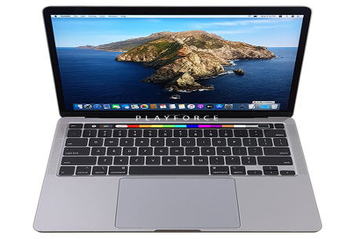

Macbook yang saya pakai untuk kuliah saat ini adalah Macbook Pro 13 inch tahun 2020 yang merupakan produk dari Apple
yang memiliki desain sederhana namun terlihat aesthetic saat di pandang. Tidak cuman desain nya saja, namun keyboard nya
juga enak untuk digunakan ditambah dengan adanya Touch Bar dan Touch ID yang semakin menarik tampilan Macbook. Selain itu,
Trackpad yang dimiliki MacBook ini cukup luas dan memiliki dua speaker di bagian kanan dan kiri.
Spesifikasi MacBook Pro
Memiliki layar retina ukuran 13,3 inci dengan lampu datar LED dan teknologi IPS.
Chip Apple M1, CPU 8-core dengan 4 core perfoma dan 4 core efisiensi, GPU 8-core,
Kamera memiliki FaceTime HD 720p
Memiliki memori 8GB, dan SSD 512GB
Kelebihann dari MacBook Pro
Memiliki desain yang keren, elegan, dan aesthetic
Daya tahan mesin yang kuat
Keamanan sistem operasi yang baik
Memiliki baterai yang cukup awet
Kekurangan dari MacBook Pro
Harga perbaikan atau repair mahal
Tempat service atau service center yang langka
Memiliki harga yang cukup mahal
Masih menggunakan dua port thunderbolt